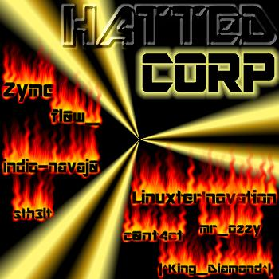

Por que Anarquia?
Porque todos nasceram para ser livre, mas o princípio da autoridade
contradiz isso. No sistema atual precisamos viver sob diversas leis,
estas sempre dão vantagem para certa classe social. Todos somos
iguais e portanto temos os mesmos direitos, ninguém vale mais que o
outro. A democracia não nos garante isso. Além de vivermos sob um
governo, ainda temos que enfrentar certos padrões sociais, onde
percebemos a presença de muito preconceito. O sistema anarquista é
a maneira de viver livre, do jeito que você realmente quer ser e que
se sente melhor. Hoje todos são como marionetes: vivem sob os
padrões impostos pelo governo e pela sociedade, seguindo leis, quase
sempre injustas e que favorecem sempre certo grupo. Na
democracia, há muita desigualdade social, onde os ricos tornam-se
cada vez mais ricos, e os pobres, cada vez mais pobres. As classes
altas só se preocupam com elas mesmas, não se preocupam com o
povo e ainda fazem ilusão a estes. Eles passam uma imagem de
felicidade, dizendo que tudo está certo . Muitos acabam achando que
está tudo certo e aceitam tudo como está. O governo só quer
dinheiro e poder, por isso o dinheiro hoje é a desgraça do mundo. É
prefirível viver livre, na "desordem", do que viver preso, na
disciplina.
o sistema pode controlar as pessoas, minha família, meus amigos e podem até me controlar mais nunca vão controlar minha mente
-_-_-_-_-_-_-_-_-_-[]'s Beco Sem Saída , JT, OGLOBO-_-_-_-_-_-_-_-_-_-